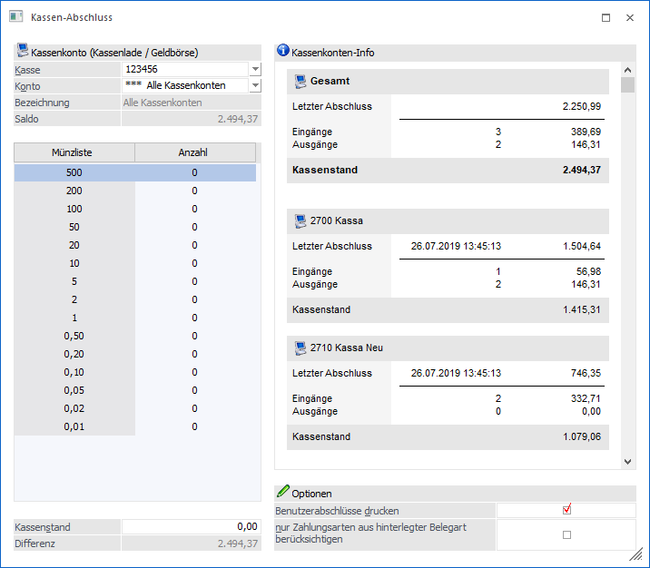
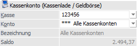
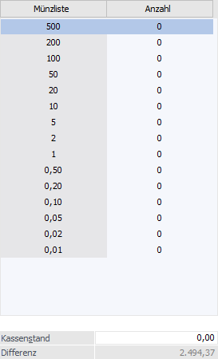
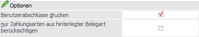
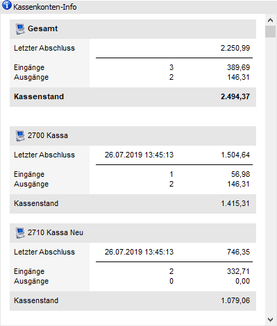
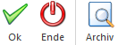
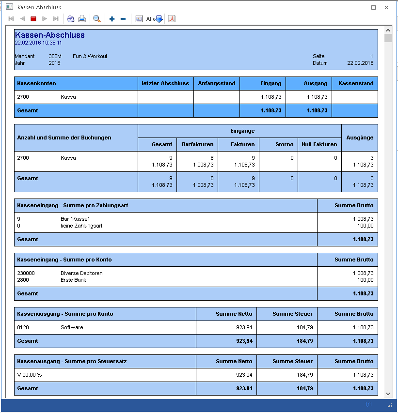

In der WinLine FAKT gibt es den Menüpunkt…
1 Abschluss
1 Kassen-Abschluss
Damit kann ein Tagesabschluss im Originalausdruck für ein Kassenkonto durchgeführt werden.
Hinweis 1
Beim Öffnen des Menüpunktes wird geprüft, ob im Menüpunkt "Kassenstamm" bereits eine Kassenidentifikationsnummer und ein FIBU-Konto hinterlegt sind und ob der Benutzer laut Kassenstamm die Berechtigung zur Erstellung von Barfakturen auf der Eingabestation hat. Ein Admin-Benutzer kann den Menüpunkt auch ohne entsprechende Hinterlegung im Kassenstamm aufrufen.

Folgende Felder stehen zur Bearbeitung zur Verfügung:
Kassenkonto (Kassenlade / Geldbörse)

Ø Kasse
Hier kann gewählt werden, welche Kassen-ID für den Abschluss herangezogen werden soll.
Ø Konto
Über die Auswahllistbox "Konto" kann das gewünschte Kassenkonto ausgewählt werden. In dieser Auswahllistbox werden alle Konten angezeigt, für die der Benutzer laut Kassenstamm die Berechtigung hat, für einen Admin werden alle im Kassenstamm verwendeten Kassenkonten angezeigt und ein zusätzlicher Eintrag "alle Kassenkonten".
Hinweis
Nach dem Öffnen des Fensters wird jenes Konto vorgeschlagen, welches dem Benutzer und der Eingabestation laut den Einstellungen im Kassenstamm entspricht. Ist für den Benutzer sowohl für die Eingabestation, als auch für "alle Eingabestationen" ein Eintrag vorhanden, wird jener für die aktuelle Eingabestation verwendet. Wenn im gefundenen Benutzer-Eintrag kein Konto eingetragen ist, wird das Default-Konto aus dem Kassenstamm verwendet.
Ø Bezeichnung
Die Bezeichnung des Kassenkontos ist hier ersichtlich. Wenn "Alle Kassenkonten" gewählt wird, wird dies ebenfalls hier angezeigt.
Ø Saldo
Hier kann der aktuelle Saldo der gewählten Kassen ermittelt werden.
Kassenstand

Ø Kassenstand
An dieser Stelle kann der aktuelle Kassenstand eingegeben werden. Entweder wird dieser manuell oder mit Hilfe der Münzliste eingegeben.
Hinweis
In der Münzlisten-Tabelle kann für jeden Schein / jede Münze die Anzahl der in der Kassenlade bzw. Geldbörse vorhandenen Stück eingetragen werden.
Ø Differenz
Es wird die Differenz zwischen aktuellen Saldo des Kassenkontos und der Eingabe des Kassenstands angezeigt. Es wird KEINE Buchung automatisch durchgeführt und dient lediglich zur Anzeige.
Optionen

Ø Benutzerabschlüsse drucken
Wenn diese Option aktiviert ist, wird zusätzlich zur Gesamtübersicht, eine Auswertung pro Benutzer ausgegeben.
Ø nur Zahlungsarten aus hinterlegter Belegart berücksichtigen
Mit aktivierter Option werden beim Abschluss der gewählten Kasse/Kassen nicht alle Non-Cash-Konten abgeschlossen (Bankomat, etc.), sondern es werden nur jene Konten berücksichtigt welche in den aktivierten Zahlungsarten der verwendeten Belegart der Kasse/Kassen verwendet werden.
Das bedeutet, dass pro Kasse eine eigene Belegart und in dieser Belegart eigene Zahlungsarten zugewiesen werden sollten, damit die Funktion richtig abgebildet werden kann.
Beispiel
Wenn beispielsweise eine Bankomatzahlungsart mit dem Konto 2800 bei mehreren Belegarten hinterlegt ist, wird wie bisher dieses Konto beim Abschluss der ersten Kasse komplett abgeschlossen auch wenn dieses eventuell in einer anderen Kasse verwendet wird.
Es muss somit bei der "Kasse 1" die "Belegart 1" und die Zahlungsart "Bankomat 1" mit dem Konto 2800 und bei der "Kasse 2" die "Belegart 2" und die Zahlungsart "Bankomat 2" mit dem Konto 2801 zugewiesen sein, damit beim Abschluss der Kasse 1 nur das Non-Cash-Konto Bankomat 1 (2800) abgeschlossen wird.
Kassenkonten-Info

Für das ausgewählte Konto wird rechts im Fenster eine Kassenkonten-Info angezeigt und beim Wechseln des Kassen-Kontos wird die Information entsprechend aktualisiert. Es werden das Datum und der Saldo des letzten Tagesabschlusses, die Anzahl und Summe von Ein- und Ausgängen seit dem letzten Tagesabschluss und der aktuelle Saldo für das Kassenkonto angezeigt.
Ist der Eintrag "alle Kassenkonten" ausgewählt wird oben eine Summe über alle Kassenkonten angezeigt und darunter die einzelnen Konten-Summen.
Buttons

Ø Ok
Mit dem Button "Ok" bzw. der Taste F5 wird der Tagesabschluss durchgeführt, wodurch für das selektierte Kassenkonto oder für "alle Kassenkonto" eine Auswertung auf den Drucker ausgegeben. Dabei werden alle Buchungen seit dem letzten Tagesabschluss des Kassenkontos berücksichtigt.
Es wird eine Seite mit der Gesamtübersicht und je nach Einstellung, zusätzlich pro Benutzer eine eigene Seite mit den Auswertungen gedruckt.
Zusätzlich werden auch verwendete Zahlungsarten der Option "3 - Zielrechnung" angezeigt, sofern aus den daraus erzeugt Lieferscheinen noch keine Rechnung erzeugt wurde.

Ø Ende
Durch Drücken des Buttons "Ende" bzw. der Taste ESC wird das Fenster geschlossen und es werden keine weiteren Aktionen durchgeführt.
Ø Archiv
Durch Anklicken des Buttons "Archiv" werden die zuletzt durchgeführten Tagesabschlüsse aus dem Archiv angezeigt und können ggf. nochmals angesehen / ausgedruckt werden.